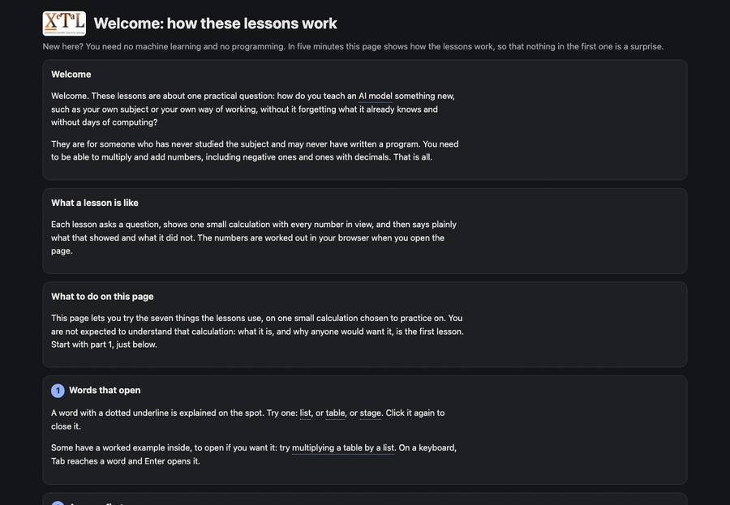
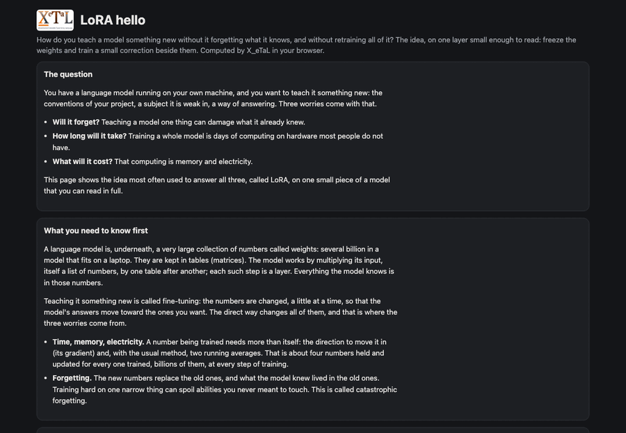
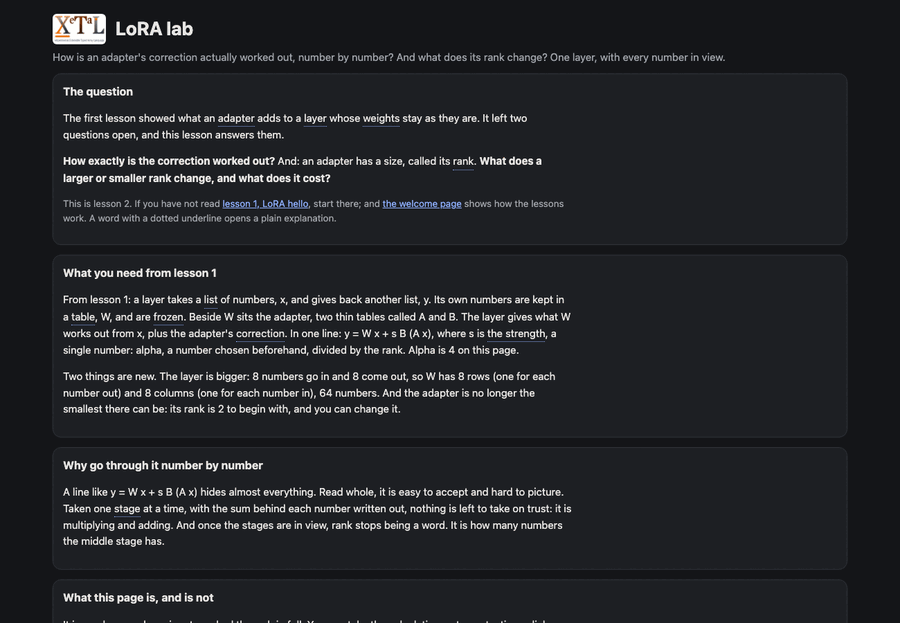
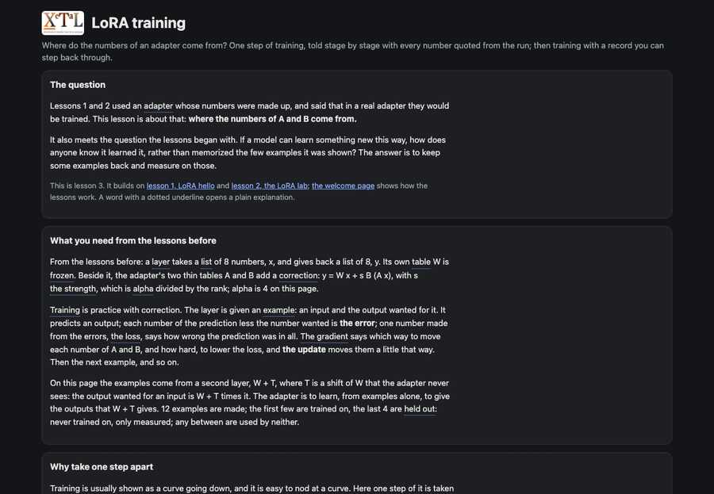
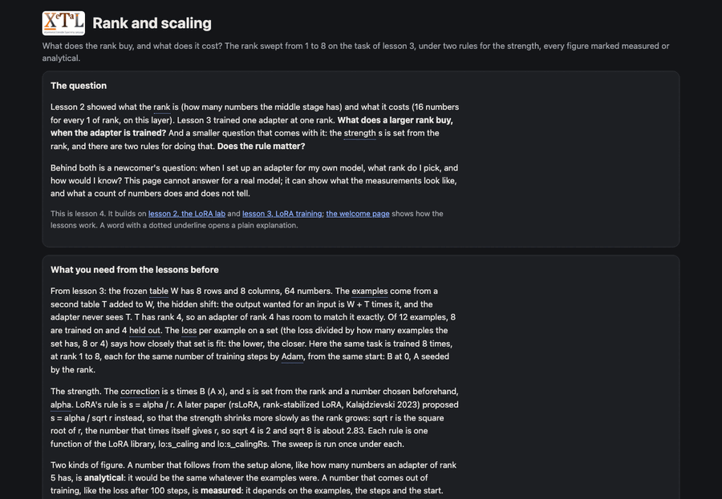
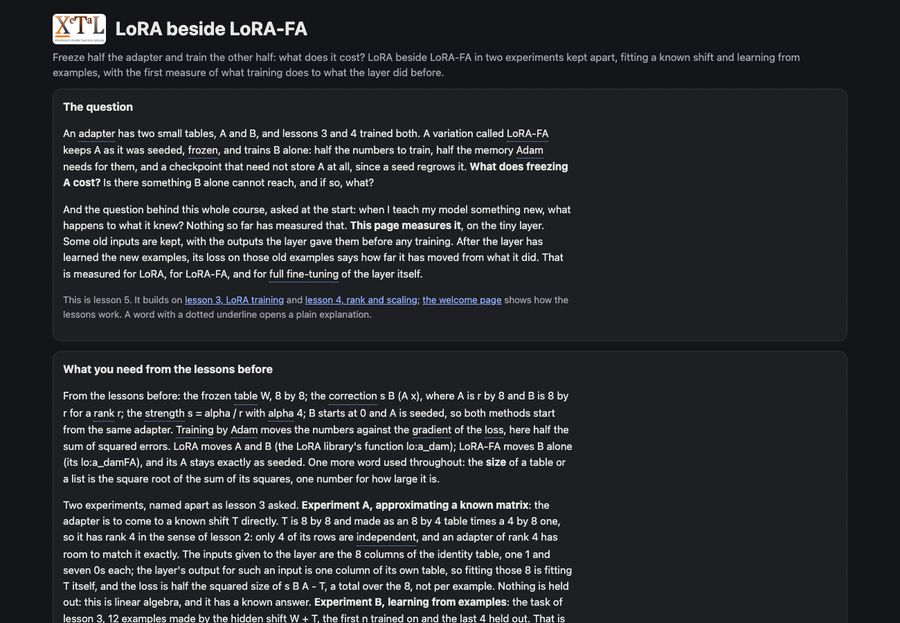
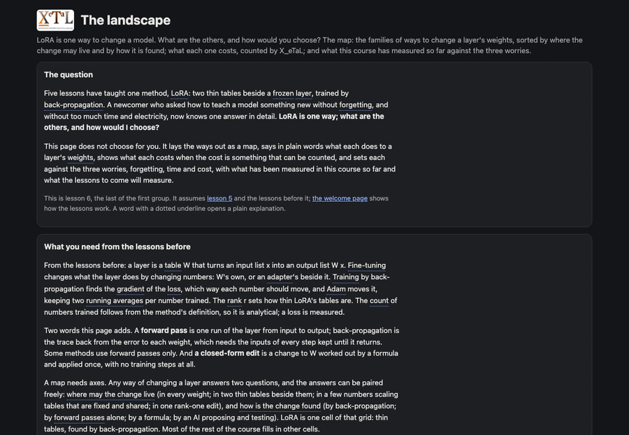

Live
Start here
Welcome: how these lessons work
New here? Five minutes on how these lessons work, with nothing to know beforehand: words that open a plain explanation, a question to answer first, a calculation you can step through and watch, pictures of the numbers, a sum written out, a change put into words, and how much to show. All on one small calculation, the same one the first lesson explains.
how to read a lessona pipeline's stagesa recorded trace

Live
LoRA · lesson 1
LoRA hello
How do you teach a model something new without it forgetting what it knows, and without retraining all of it? The idea, LoRA, on one layer small enough to read: a frozen 4 x 4 table of weights and a small correction beside it. Change the input or its strength and see what the adapter adds while the weights never move; what it would cost on a real layer; and what that does and does not settle.
y ← (W, A, B, s) ˡᵒf̲orward x
An adapter is one tuple, (W, A, B, s): the frozen matrix, the two small trained ones and the scale, taken apart by the library.
LoRAa frozen layera low-rank updatethe mergetuples as arguments

Live
LoRA · lesson 2
LoRA lab
How is an adapter's correction worked out, number by number, and what does its rank change? One layer of 64 frozen numbers and an adapter beside it: take the calculation a stage at a time and watch each stage's numbers appear, click any number to see the sum behind it, pick a letter of the formulas to see what it stands for, and move the rank to see what changes, what it costs, and what does not move at all.
"h[k] | r" ᵉe̲q< "sum j:=0..7 | A[k,j] * x[j]"
A stage of the layer is its equation, written as text: the same text is run to give the numbers and drawn to give the formula.
a pipeline of equationsa recorded tracesymbols marked in LaTeXrank

Live
LoRA · lesson 3
LoRA training
Where do the numbers of an adapter come from? One step of training told stage by stage on an 8 x 8 layer, every number quoted from the run: the prediction, the error, the gradients, the update, and the frozen table untouched. Then training by Adam with a record you can step back through, the loss on the examples trained on beside the loss on examples held out, and three experiments set up as data: a first run, too large a learning rate, too few examples.
▷ "dB[i,k] | 8 r" ᵉe̲q< "sum m:=0..n-1 | s * g[i,m] * h[k,m]" ▹dB
A gradient is one more stage of the pipeline, an equation like the forward ones: the error times what the stage read, summed over the examples.
a training step as a pipelinegradients checked against the librarya record to step back througha loss held out

Live
LoRA · lesson 4
Rank and scaling
What does the rank buy, and what does it cost? The adapter's rank swept from 1 to 8 on the learning task of lesson 3, under LoRA's strength alpha / r and rsLoRA's alpha / sqrt r: for each, the numbers trained (analytical), the loss on the examples trained on and on the held-out ones after the same steps (measured), and the size of the adapter's table beside the hidden shift's. Move alpha and the steps; the page reruns the sweep and says what moved, never that a rank is better.
a2 ← (W, 1 ˡᵒs̲eeded k c̲at 8, (8 c̲at k) r̲eshape 0.0, alpha ˡᵒs̲calingRs k)
The two rules differ in one number of the adapter's bundle, the strength; everything else, the start, the steps and the examples, is the same.
a sweep as a loop with a recordmeasured against analyticaltwo scale rules side by sidewhat a count does not predict

Live
LoRA · lesson 5
LoRA beside LoRA-FA
Freeze half the adapter and train the other half: what does it cost? Two experiments kept apart. Fitting a known shift: LoRA and LoRA-FA from the same start, against the best any rank can do and the floor LoRA-FA cannot pass, because its update stays in one subspace, the frozen A's row space, shown by projecting each update onto it. Then learning from examples: the two beside full fine-tuning of the layer itself, with the loss on examples trained on, held out, and the layer's old examples (what training did to what it knew), every figure measured or analytical.
P ← (o̲\ A) '+ '× i̲nner (ᵐˣi̲nverse A '+ '× i̲nner o̲\ A) '+ '× i̲nner A
The projection onto the frozen A's row space, written out: what LoRA-FA's update can never leave, and the first subspace a reader meets.
LoRA-FA, a frozen Athe best of a rank (singular values)a subspace and a projection onto itretention: the old examples' lossfull fine-tuning beside adapters

Live
LoRA · lesson 6
The landscape
LoRA is one way to change a model; what are the others, and how would you choose? The map: six families of ways to change a layer's weights (change none; change every one or chosen ones; train a small part beside frozen weights; learn without back-propagation; edit in closed form; let an AI do the editing), each in plain words with one line of arithmetic, sorted by two questions kept apart, where the change may live and how it is found; each family's accounting at 8 x 8 and at 4096 x 4096 computed by X_eTaL, every figure analytical; the three worries against what this course has measured; where every lesson, live or to come, sits.
lora ← (4 ˡᵒp̲arams 8 8) c̲at 16 ˡᵒp̲arams 4096 4096
The same count at the two widths side by side: on the small layer an adapter is as large as the layer, on the wide one it is 1 in 128.
a map with two axesa count from a definitionanalytical, not measuredthe baseline that changes nothing